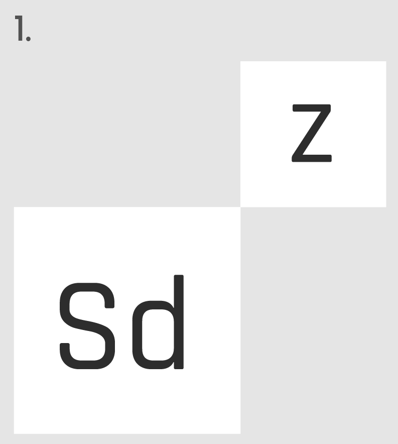
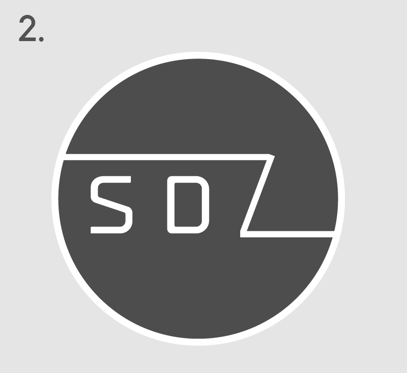

This is the up-to-date logo. I think that it suits the SDZ very well. It's intriguing - not in a sense that it shouts out "we are the SDZ", but it does subtly hint science with its futuristic style. The fill design as opposed to the outline design (as shown in 2. Previous Version), has a much more modern appeal to it, which I like a lot. I think this branding message is very close-to what the group wants.
Previous Versions

Issue faced:
The logo was too much associated with chemistry. While we want the SDZ to be a science-focused space, we also want to attract some non-science students.
I also didn’t like the fact that the “Z” was separate from the “SD” in this logo design. Both of these issues were reflected in my logo research, where over half of the survey participants addressed these challenges.

Issue faced:
I could not see any detail from a distance, which is a problem when you want your logo to noticeable and memorable. I also didn’t like how the logo was designed in this outline style - I don’t think it resonated with the modern approach that the SDZ wanted to portray.